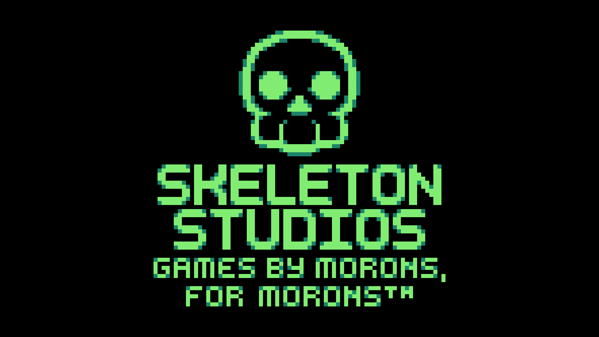

ABOUT US

Skeleton Studios is a team of indie game developers primarily focused on first-person singleplayer games. With alien frontiers, dark undergrounds, and shattered earths, our games bring you to worlds you've never seen anything like before - promising fun, intriguing, and exciting times ahead. We strive to deliver unique, meaningful experiences using hand-crafted assets, high attention to detail, and a love for both the medium and our contributions to it.

OUR GAMES
Skeleton Studios has been hard at work on games since 2020, and we released our first, On Your Hands, in 2023. After development of Welcome to Ooblterra, our latest projects are in progress; join the Mailing List or Follow us on twitter for regular updates.
CREATURE FEATURE
Deadly monsters such as Lurkers, Grinders, or Concealers will make surviving difficult - cower, confront, or even kill them to make it through Ooblterra alive.
UNRAVEL THE MYSTERY

Find hidden secrets throughout On Your Hands' levels to reveal the truth - of the 'Oobl', the strange alien race who control Ooblterra; of the wildlife that populates it; and of Prot and Mack - there's more to their history than meets the eye.